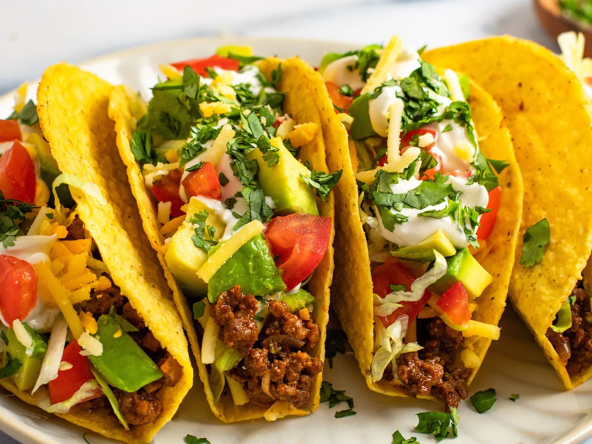

Beef Tacos
Quick weeknight tacos with seasoned ground beef.
Ingredients
- 1 lb ground beef
- 1 tbsp taco seasoning
- 1/4 cup water
- 8 taco shells or tortillas
- Shredded lettuce
- Diced tomatoes
- Shredded cheese
- Sour cream (optional)
Directions
- Brown ground beef in a skillet; drain excess grease.
- Add taco seasoning and water; simmer 2–3 minutes.
- Warm taco shells or tortillas.
- Assemble tacos with beef and toppings.
- Serve immediately.
Step 1: Prepare Your Taco Station
Gather all your ingredients and toppings. You'll need 1 pound of ground beef, taco seasoning, water, taco shells or tortillas, shredded lettuce, diced tomatoes, shredded cheese, and sour cream. Arrange the toppings in small bowls on your counter for easy assembly!
Step 2: Brown the Ground Beef
Heat a large skillet over medium-high heat. Add 1 pound of ground beef and cook until browned, breaking it up into crumbles as it cooks. This should take about 5-7 minutes. Once fully cooked, drain the excess grease using a colander or by tilting the pan carefully.
Step 3: Season the Beef
Return the drained beef to the skillet. Add 1 tablespoon of taco seasoning and 1/4 cup of water. Stir well and let it simmer for 2-3 minutes. The sauce will be absorbed into the meat, making it flavory and delicious!
Step 4: Warm Your Shells
While the beef simmers, warm your taco shells or tortillas. You can do this in the oven at 350°F for a few minutes, or warm tortillas in a skillet for 30 seconds on each side. Warm shells are crucial for the perfect taco experience!
Step 5: Assemble and Serve
Now the fun part! Fill each warm shell with seasoned beef, then add your favorite toppings: shredded lettuce, diced tomatoes, shredded cheese, and a dollop of sour cream. Serve immediately while everything is warm. Tacos are best enjoyed fresh and hot!
Recipe Completed!
You finished the story mode. Ready to make another batch?